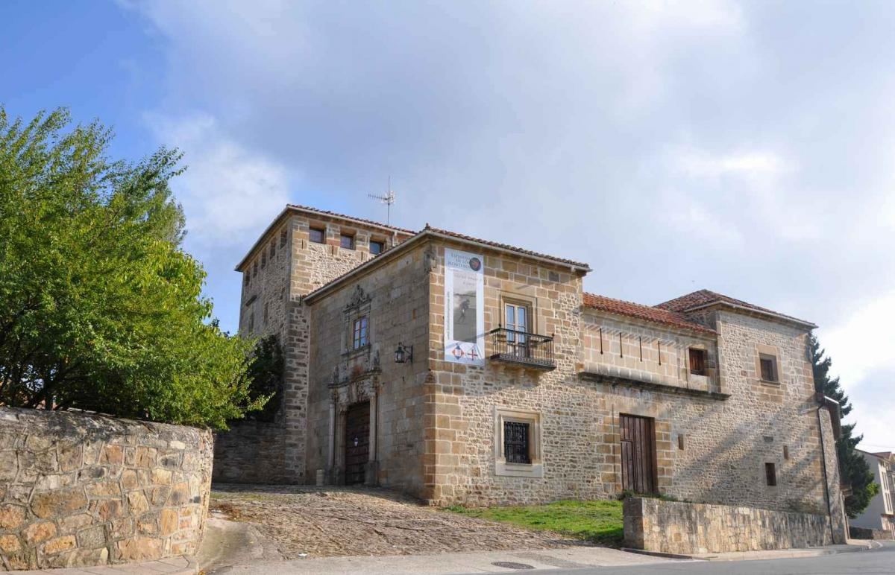

Cómo llegar a nuestra boda
Nos hará mucha ilusión veros en el Palacio de los Fernández-Villa. Aquí tenéis toda la información para llegar cómodamente.
Palacio de los Fernández-Villa
C. Progreso, 29. Espinosa de los Monteros, Burgos
C. Progreso, 29. Espinosa de los Monteros, Burgos

Nuestro precioso Palacio donde celebraremos la boda